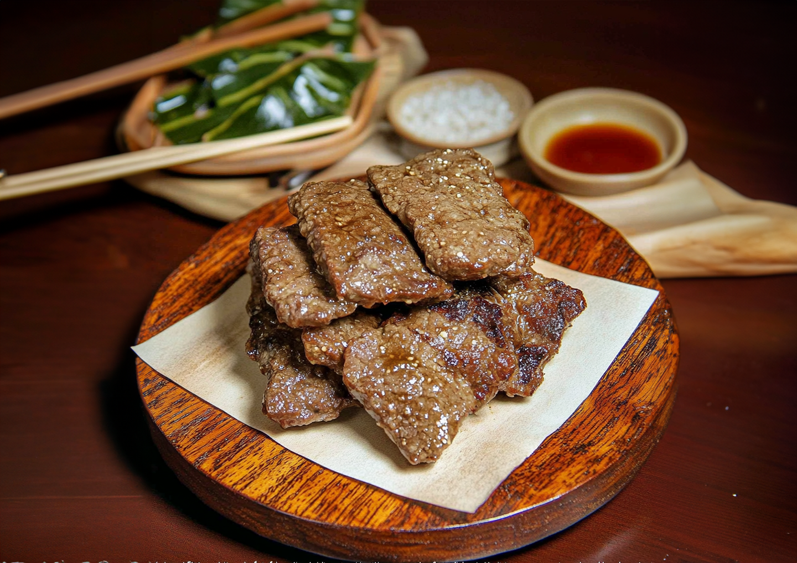
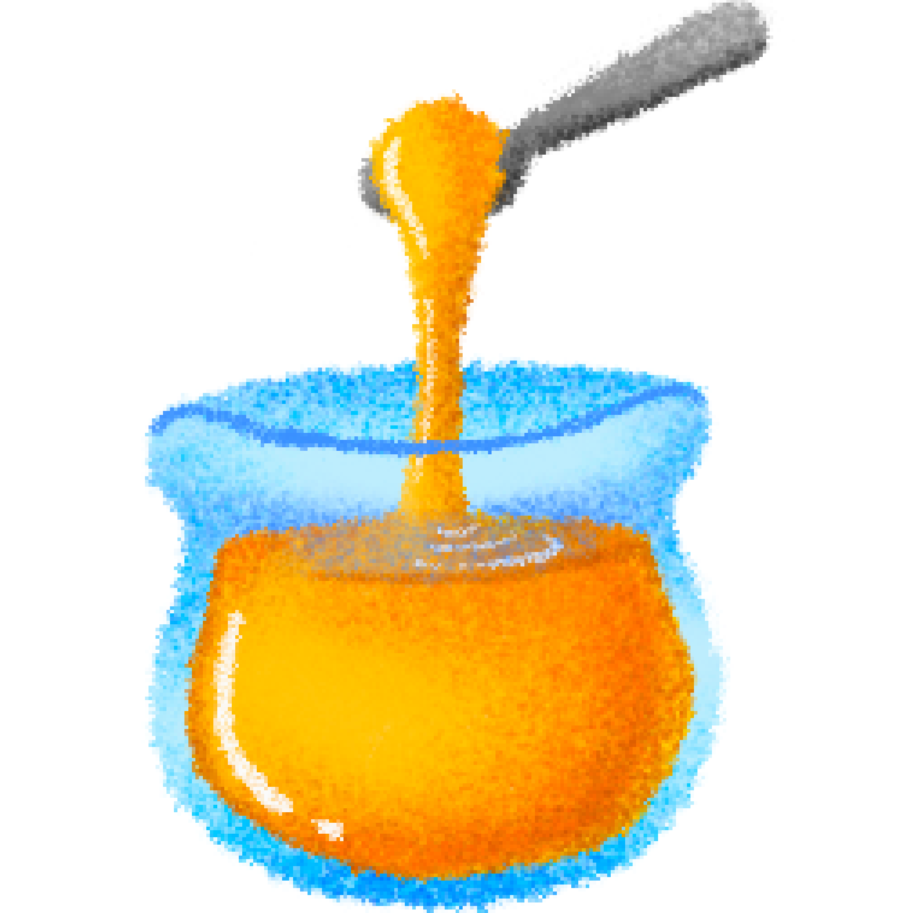

산적
우둔살
육수

진간장

꿀(조청)

참기름
후추
보통 산적은 고기나 채소를 길쭉하게 썰어 꼬지에 꽂아 구운 음식을 말한다.
하지만 이 레시피는 명절 차례 음식의 하나인 산적을 소개하고 있다.
차례용 산적은 간장 양념에 재료를 재워서 조린 음식을 말한다.
재료의 종류의 따라 쇠고기 산적, 갑오징어 산적, 문어 산적, 상어고기 산적 등 다양한 산적이 있다.
산적의 양념은 재료의 종류와 상관없이 동일하기 때문에 양념만 알고 있으면 여러가지 요리에 활용이 가능하다.
1. 양념을 만든다.
육수
육수는 다른 요리에도 자주 활용되기 때문에 한 번 끓일 때 한솥에 끓여 냉장고에 얼려 보관하는 것을 추천한다.
물과 멸치, 다시마, 대파, 양파, 무우를 넣고 뭉근하게 육수를 우린다. 대파는 뿌리까지 함께 넣고 양파는 빨간 껍질을 같이 넣어주면 맛있고 건강한 국물을 즐길 수 있다.
한 컵에 진간장 반 컵을 넣고 꿀 2 큰술, 참기름 2 큰술, 후추 약간을 넣어 잘 섞이도록 저어준다.
2. 고기를 재운다.
완성된 양념에 소고기를 넣어 간이 잘 베이도록 한 두시간을 냉장고에서 숙성시킨다.
3. 잘 굽는다.
숙성이 완료된 소고기를 달궈진 후라이팬에 굽는다.
양념이 된 고기는 잘 타기 때문에 불조절에 주의해야 한다. 중간 중간에 양념을 고기 위로 얹어 가면서 익히면 완성이다.
담백한 고기의 맛. 식어서 먹을 때 맛있는 요리.